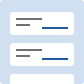

Accordion (Sections With Show/Hide Functionality)
Accordion (Sections With Show/Hide Functionality)
An accordion is a vertically stacked set of interactive headings that each contain a title, content snippet, or thumbnail representing a section of content.
 Alert
Alert
An alert is an element that displays a brief, important message in a way that attracts the user's attention without interrupting the user's task.
 Alert and Message Dialogs
Alert and Message Dialogs
An alert dialog is a modal dialog that interrupts the user's workflow to communicate an important message and acquire a response.
 Breadcrumb
Breadcrumb
A breadcrumb trail consists of a list of links to the parent pages of the current page in hierarchical order.
 Button
Button
A button is a widget that enables users to trigger an action or event, such as submitting a form, opening a dialog, canceling an action, or performing a delete operation.
 Carousel (Slide Show or Image Rotator)
Carousel (Slide Show or Image Rotator)
A carousel presents a set of items, referred to as slides, by sequentially displaying a subset of one or more slides.
Checkbox
WAI-ARIA supports two types of checkbox widgets: dual-state checkboxes toggle between two choices -- checked and not checked -- and tri-state checkboxes, which allow an additional third state known as partially checked.
 Combobox
Combobox
A combobox is an input widget that has an associated popup.
 Dialog (Modal)
Dialog (Modal)
A dialog is a window overlaid on either the primary window or another dialog window.
 Disclosure (Show/Hide)
Disclosure (Show/Hide)
A disclosure is a widget that enables content to be either collapsed (hidden) or expanded (visible).
 Expandable region
Expandable region
Content TBD
 Feed
A feed is a section of a page that automatically loads new sections of content as the user scrolls.
 Grid (Interactive Tabular Data and Layout Containers)
Grid (Interactive Tabular Data and Layout Containers)
A grid widget is a container that enables users to navigate the information or interactive elements it contains using directional navigation keys, such as arrow keys, Home, and End.
Landmarks
Landmarks are a set of eight roles that identify the major sections of a page.
Link
A link widget provides an interactive reference to a resource.
Listbox
A listbox widget presents a list of options and allows a user to select one or more of them.
 Menu and Menubar
Menu and Menubar
A menu is a widget that offers a list of choices to the user, such as a set of actions or functions.
Menu Button
A menu button is a button that opens a menu as described in the Menu and Menubar Pattern.
 Meter
Meter
A meter is a graphical display of a numeric value that varies within a defined range.
 Radio Group
Radio Group
A radio group is a set of checkable buttons, known as radio buttons, where no more than one of the buttons can be checked at a time.
Slider
A slider is an input where the user selects a value from within a given range.
Slider (Multi-Thumb)
A multi-thumb slider implements the Slider Pattern but includes two or more thumbs, often on a single rail.
Spinbutton
A spinbutton is an input widget that restricts its value to a set or range of discrete values.
Switch
A switch is an input widget that allows users to choose one of two values: on or off.
 Table
Table
Like an HTML table element, a WAI-ARIA table is a static tabular structure containing one or more rows that each contain one or more cells; it is not an interactive widget.
 Tabs
Tabs
Tabs are a set of layered sections of content, known as tab panels, that display one panel of content at a time.
 Toolbar
Toolbar
A toolbar is a container for grouping a set of controls, such as buttons, menubuttons, or checkboxes.
Tooltip
A tooltip is a popup that displays information related to an element when the element receives keyboard focus or the mouse hovers over it.
 Tree View
Tree View
A tree view widget presents a hierarchical list.
Treegrid
A treegrid widget presents a hierarchical data grid consisting of tabular information that is editable or interactive.
Window Splitter
A window splitter is a moveable separator between two sections, or panes, of a window that enables users to change the relative size of the panes.